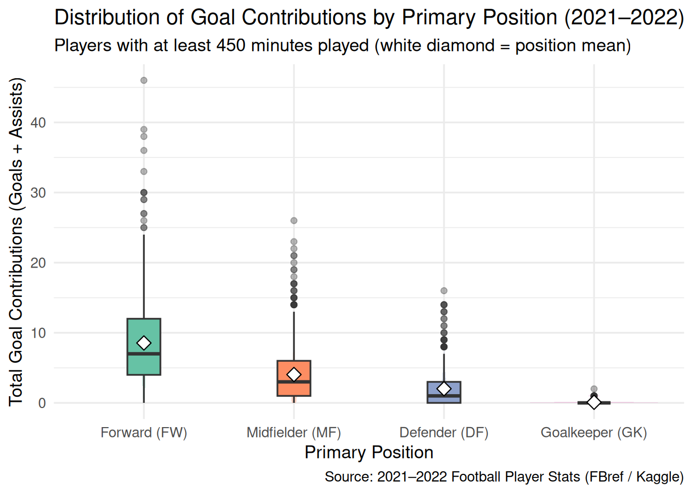
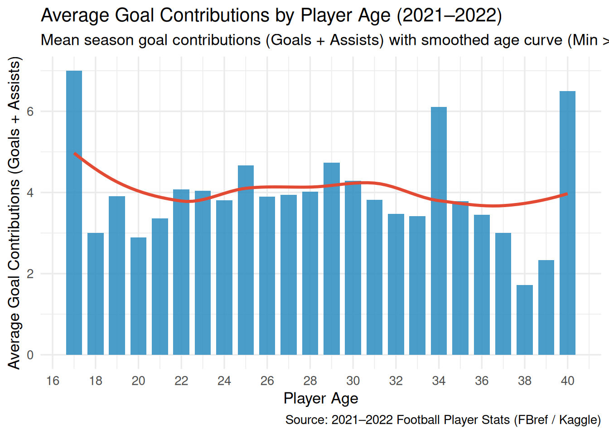

Position, Age, and Efficiency Analysis
1. Player Age vs. Goal Contributions (2,703 Outfield Players)
Hover over any dot to inspect an individual outfield player’s age, club, position, and season goal contributions.
2. Goal Contribution Efficiency by Age Across Positions
To measure per-minute efficiency without tiny-sample distortions, this chart shows all 1,518 outfield players who played at least 10 full 90-minute matches (90s >= 10, or 900+ minutes).
3. Distribution of Goal Contributions by Position and Age

